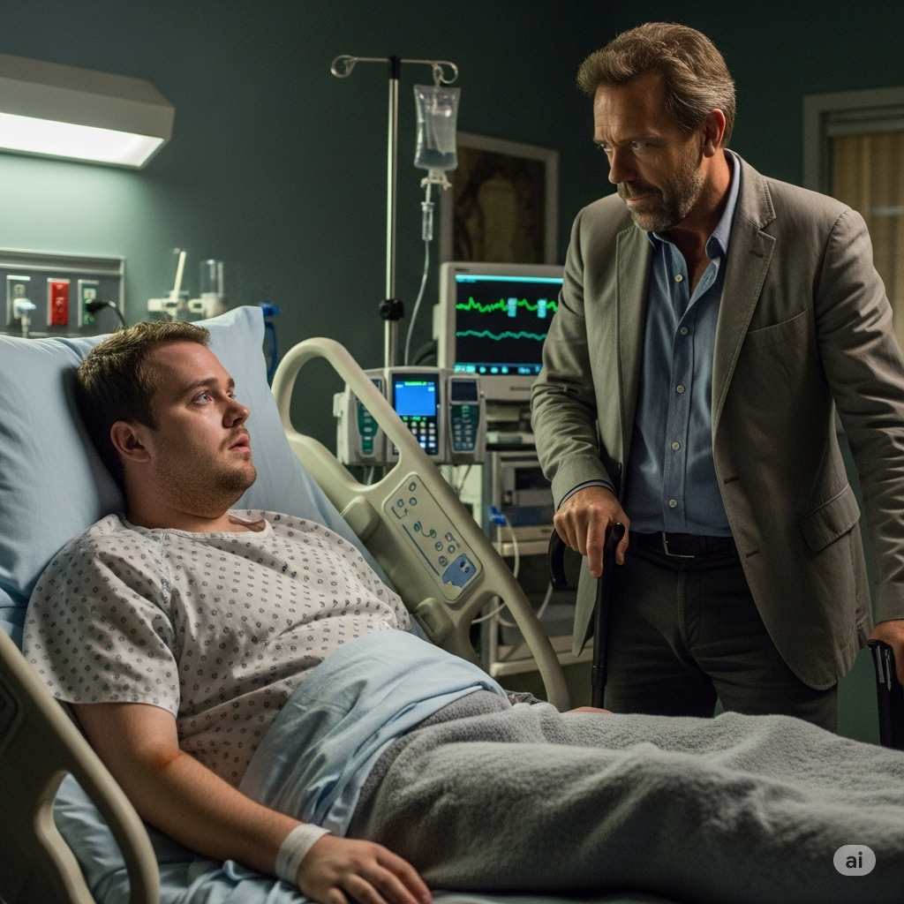

Bienvenido a Dr House MD
¿Por qué Dr House?
Elegí la serie Dr House porque es una serie que actualmente estoy viendo con mi novia. Estamos muy pegados a ella y estamos cerca de terminarla. Es una serie que me ha atrapado mucho con sus personajes realistas, con problemas e imperfectos. La música, los casos y las relaciones son algunas de las pocas cosas que adoro de esta.